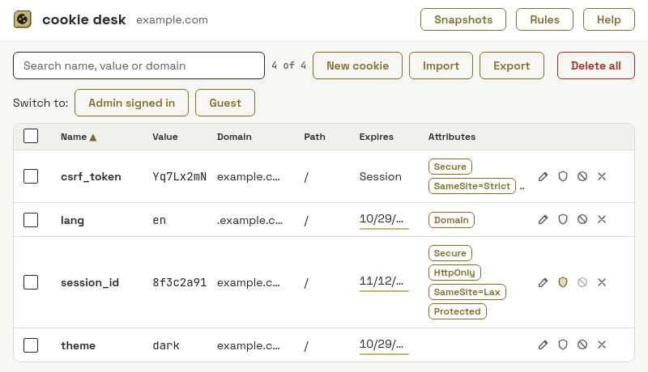
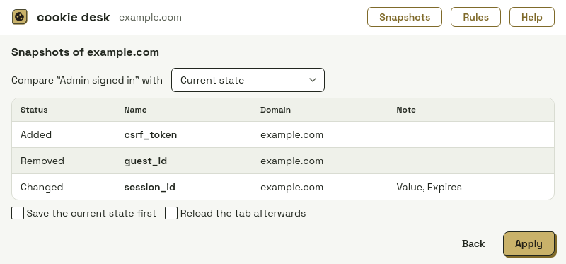
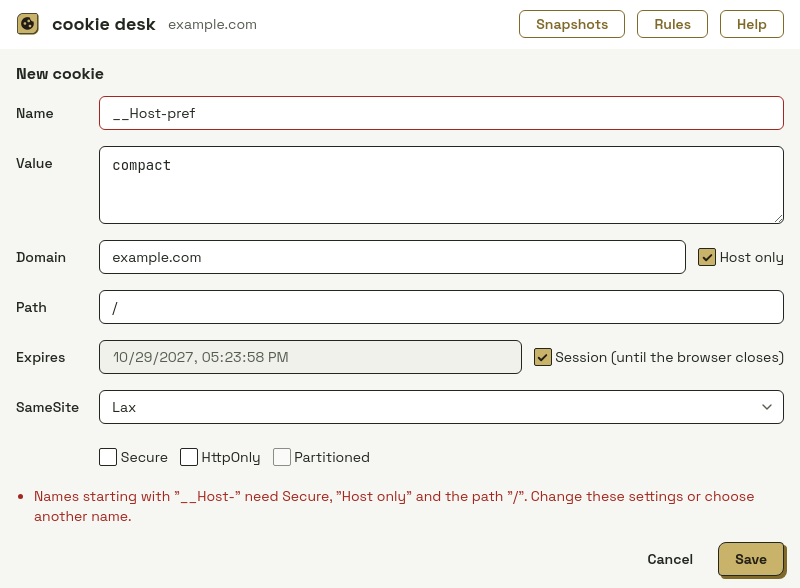

See, edit and keep the cookies of any site.
Your old cookie editor stopped working when Chrome switched to Manifest V3? Export your cookies there if you still can, import the file here and carry on. Built for Manifest V3 from the start.

Everything you need, at no cost
Every cookie at a glance
Value, domain, path, expiry, Secure, HttpOnly, SameSite, host-only and partitioned (CHIPS) cookies. Search, sort, copy with one click.
Edit with a safety net
Checks before saving: __Host- and __Secure- rules, SameSite=None without Secure, past expiry, wrong domain. If Chrome still refuses, you see Chrome's reason.
Stay signed in
A protected cookie comes back when a site, another extension or “Delete all” removes or changes it.
Remove whenever set
Unwanted cookies are deleted every time a site sets them, also by pattern such as ads_*.
Import that tells you what is wrong
JSON in the common formats of other cookie editors and of Playwright and Puppeteer, plus cookies.txt, with a preview and a clear message per entry.
Export your way
JSON, cookies.txt or a Cookie header, to the clipboard or a file. Incognito and partitioned cookies are kept apart correctly.
Switch between accounts in one click
Save all cookies of a site as named snapshots such as “Admin signed in” or “Guest”. Compare them cookie by cookie, apply with a preview and an automatic backup, or switch in one click from the popup. One snapshot per site is free.

Mistakes explained before saving
A __Host- cookie without Secure or a domain that doesn't match the site is caught and explained, instead of being dropped silently by the browser.

What it asks for, and why
Cookie values never leave your device. No tracking, no telemetry, no account. It makes no network requests.
cookies- Read, create, edit and delete cookies, and apply your protect and remove rules.
activeTab- Know which site you opened the extension on, without access to all your tabs.
storage- Keep your rules, snapshots and settings locally in your browser.
- Site access, per site
- Requested only when you open the extension on a site and click “Allow access”. Nothing is granted at install time.
api.lemonsqueezy.com- Optional, asked only when you activate a purchase later. Not used during early access.
Snapshots for developers, QA and support
Unlimited snapshots for every site, comparison, one-click switching and an automatic backup before each change.
Free during early access, like every other feature of Cookie Desk. Paid features will come later as a one-time purchase. If you install now, you keep them for free.